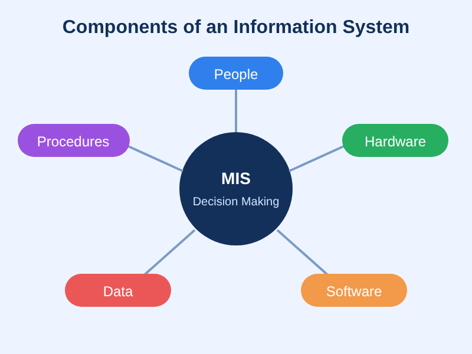

Ria's MIS & AI EthicsWebsite OverviewRia RaamOctober 26, 2026 Management Information Systems (MIS) and Artificial Intelligence (AI) are changing the way information is given to the public but also the overall efficiency in analyzing information. MIS is defined as a tool that allows business strategy to use technology, to be able to analyze the information presented quicker. AI is used as a supplemental tool as it is a fast way to ensure that the information is processed and put in a format that is understandable by many people. AI has become very accessible now and is being actively used in MIS to help get solutions to business problems quicker. This website will walk you through the benefits and disadvantages of AI, what MIS can do, and security of information. Overall MIS and AI work together to create an efficient way to understand the raw data, and helps analyze how to use the information to help make smarter business decisions. Management Information Systems (MIS) and Artificial Intelligence (AI) are transforming both how information is communicated to the public and how efficiently data is analyzed. MIS leverages technology to align with business strategies, enabling faster data analysis. Meanwhile, AI serves as a powerful complementary tool, rapidly processing complex data into clear, accessible insights. As AI becomes increasingly accessible, its integration into MIS allows organizations to solve business challenges more rapidly. This page explores the benefits and disadvantages of AI, the capabilities of MIS, and key aspects of information security. Together, MIS and AI convert raw data into actionable insights, driving smarter business decisions.
|